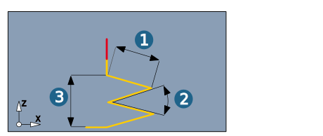

Macros
Additional movements to vertical infeed and retract movements that define a gentle approach and retract behavior at the calculated milling paths.
Macros are only executed if they do not result in a collision with neighboring surfaces.
Automatic
Smooth: The approach or retract movement is performed smoothly in a circular motion.
Length: Defines the length of the approach or retract movement.
Side clearance/Axial clearance: Clearance in the axial or X/Y direction that can be travelled without a collision.
Max. axial lift: Maximum lifting movement in the axial direction.
Feedrate macros: Various feedrate values for approach and retract macros. Default = Feedrate XY.
Manual
The tool is approached or retracted either in a Perpendicular (1), Circular (2) or Tangential (3) manner.
The retraction can also be performed as a Ramp (4). These additional movements are only ever performed if they do not result in a collision with neighboring surfaces.
The approach or retract movement is performed smoothly in a circular motion.
 |
Ramp retract macro: Ramp length (1), Ramp angle (2) and Ramp height (3).
|  |
Return macro
If Return macro is enabled, horizontal stepover is executed between the milling paths via the clearance plane or clearance distance. The activated approach or retract macro is executed for each retract or infeed movement.
Macros normal to surfaces: The approach and retract macros are executed in the direction of the surface normals.
Start points
Enable Use start point to individually control the start point of the machining in case of a closed tool path. The point on the toolpath closest to the start point is chosen and the user defined macro is added to access this point.
|
Select the required Start points. The number of defined start points is displayed. |